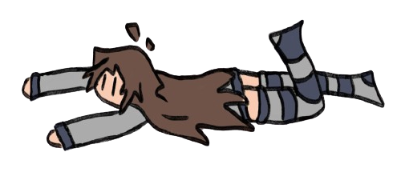

i think it is loading

Hi maybe i am
 razy
razy
I'm very meepious maybeness
oh i am maybe less than 170cm tall
and maybe im 18 years old and maybe i weigh 55kg today.
oh maybe i
am also dumb and maybe stupid and maybe i am also a little bit of a
monster
I dreamt of this on november 9th 2022
i had a tiny plush of myself always with me; i was in a warped version
of my school that was some kind of backrooms thingness; i struggled to
stand still and i fainted all the time and i couldn't see well (as if i
couldn't fully open my eyes/keep them open) i was in economy class and
the teacher was extremely fat, like her hand was as big as my face, and
she said she was growing claws on her knuckles and she was happy about
it because she thought she'd become wolverine then i left the classroom
and i fell down in the hallway and i started kind of floating and then
people grouped around me to see what was happening then i wanted to go
home and i found the force to get back up and i started walking around
but the school was a massive 4 floor maze kind of rounded and it looked
endless. I found a door that led to a train station i could use to go
back home but i didn't take a train because i needed my backpack which
for some reason I knew was at the entrance. I kept looking around until
i found said entrance and then i somehow transitioned to being outside
my house riding a bike, and a massive hornet was flying extremely close
to my left ear making a horrible noise. Then i got home and there were
cardboard boxes everywhere as if we had just moved and while going to my
room i found a rat that came out of a box and i told my dad, and he
stomped the rat to death and then everything went black and i woke
up